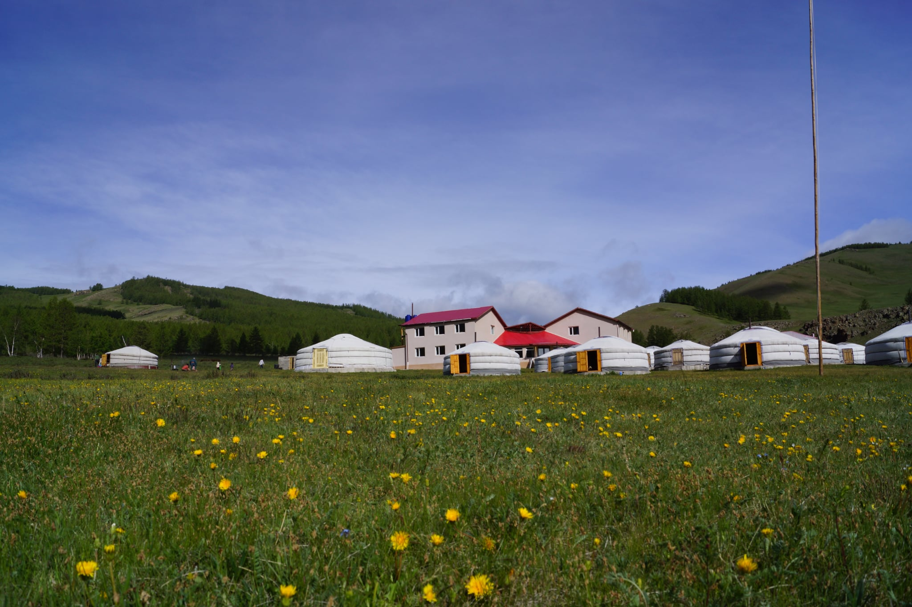
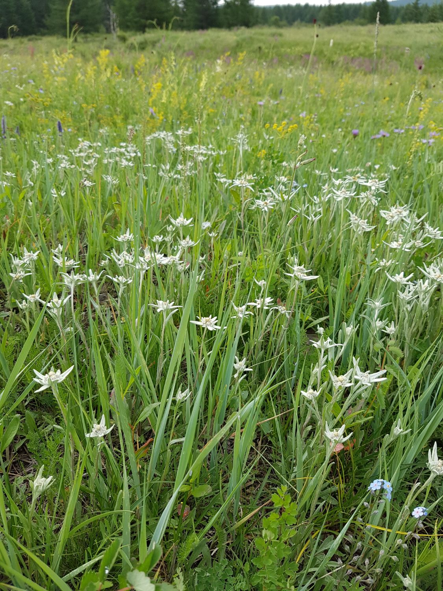
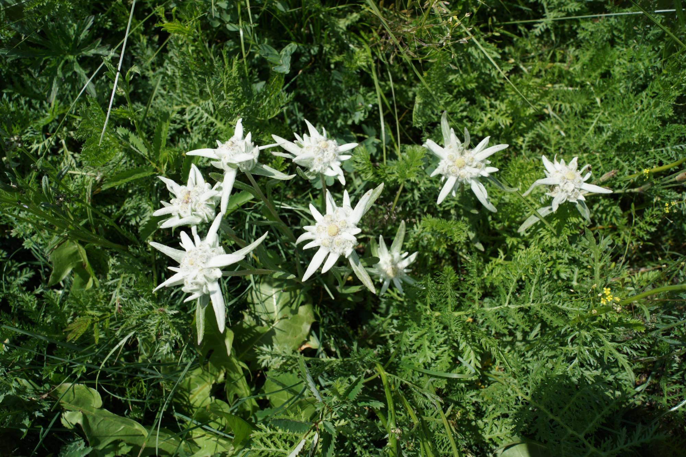

花畑をのんびり歩く
夏のテレルジを彩る野花を眺めながら、無理のないペースで高原の草原を歩きます。


テレルジの花畑と亀岩を歩き、ゲルに泊まる。乗馬とモンゴル文化体験も楽しむ、気軽な花の旅です。
夏のテレルジを彩る野花を眺めながら、無理のないペースで高原の草原を歩きます。
草原のゲルでモンゴル料理を味わい、街の明かりから離れた夜空を楽しみます。

乗馬、デール試着、縦文字体験、弓矢体験など、草原の文化にも触れられます。
| 日程 | 行程 | 宿泊 |
|---|---|---|
| 1日目 | チンギス・ハーン国際空港にて日本語ガイドがお出迎え。専用車でテレルジ国立公園へ直行します。車窓からウランバートル郊外の草原風景を眺めながら、ゲルキャンプへ。チェックイン後は、ゲルの周辺をゆっくり散策し、草原の空気と静けさを楽しみます。夕暮れには空の色が移ろう大地を眺め、日没後は街明かりの少ない草原で満天の星空を観察します。 食事：✕／✕／✕専用車 | テレルジ国立公園 ゲル泊 洋式トイレシャワーFREE WIFI |
| 2日目 | 朝、草原の朝日を楽しんだ後、テレルジの山と花畑へフラワーハイキングに出発。ガイドが季節ごとに咲く野花や草原の植物をご案内し、緩やかな丘と小道を自分のペースで歩きます。昼食後は、テレルジのシンボル・亀岩を観光し、草原での乗馬体験へ。夕方はゲルキャンプで、モンゴル伝統衣装デールの試着、モンゴル伝統縦文字で名前を書く体験、弓矢体験などの文化プログラムに参加します。モンゴル伝統料理の夕食後は、温かい飲み物を片手に星空観察を楽しみます。 ハイキング：約3km食事：朝／昼／夕 | テレルジ国立公園 ゲル泊 洋式トイレシャワーFREE WIFI |
| 3日目 | 朝食後、専用車でチンギス・ハーン国際空港へ。日本への帰国便に合わせてお送りします。 食事：朝／✕／✕専用車 | — |
※花の開花状況、乗馬・文化体験の内容は天候および現地事情により変更となる場合があります。
| 4名ご参加：￥86,000/一人 | ※ 2名or3名でツアー開催追加料金：￥45,000/一人 ※ 1名開催追加料金：￥50,000（お一人貸切プライベート旅！） ※ 12歳以下のお子様料金：30％割引 |
|---|